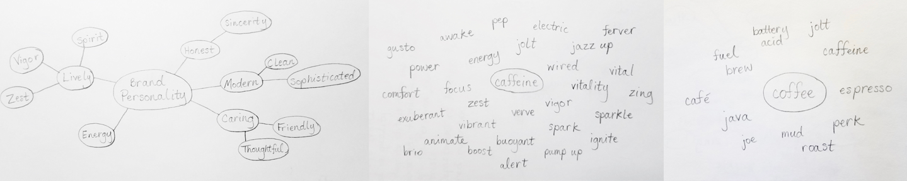
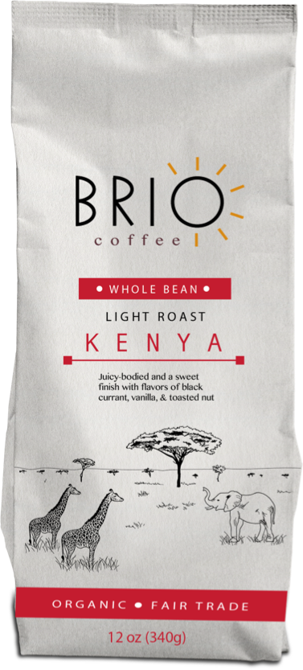

Brio Coffee
Brio Coffee is an artisan coffee roasting company based in Houston, TX, with a passion for flavor, art, the environment, and a good-quality lifestyle.
VIEW WEBSITEmy role:
Research
Branding
UX Design
Site Development
duration:
5 weeks
deliverables:
Competitive Analysis
Branding & Logo
Wireframes
Mockups
User Testing
Responsive Website
tools / software:
Pencil & paper
Figma
Sketch
Adobe Photoshop
Adobe Illustrator
UsabilityHub
the challenge
Artisan coffee roasting has transformed coffee into an art over the past few decades and is growing in popularity as consumers are noticing its attention to quality, flavor, and sustainability. Brio Coffee is a newcomer to the Houston coffee scene and seeks to sell their coffee bean varieties to local coffee shops, farmers markets, and online.
They need a brand that reflects their values, and that appeals to creatives and the ethically-minded. They also need a homepage to showcase their coffee products and vision.
the solution
In order to create Brio’s branding and website, I needed to understand the coffee roasting market, the consumers, and the goals that Brio hoped to achieve through their brand. This research helped me construct a brand identity, that is conveyed through the company’s products and homepage. I developed a responsive site that showcases Brio’s coffee bags and reflects their passion for coffee and for life.
discovery
Before I could begin brainstorming the brand identity, I needed to learn more about Brio as a company, their products, their audience, and the coffee market.
the company
Brio Coffee has dedicated the necessary time and effort towards understanding the science behind the roasting process, working with artisan growers for high- quality raw beans, and crafting the flavors. I knew that their brand should reflect this dedication and attention to detail.
the products
Currently, Brio offers three varieties of coffee roasts, from Brazil, Kenya, and Peru. Their coffee beans are Fair Trade and Single Origin, and Brio wants these attributes showcased.
the audience
Brio’s average consumer could be a coffee aficionado or someone who is just trying coffee for the first time, but ideally, he/she appreciates good quality coffee that is made with care.
the competitors
Brio’s competitors range from large coffee chains such as Starbucks or Stumptown to smaller local coffee roasters such as Java Pura or Boomtown Coffee. I focused more on these local companies to discover how they market themselves to the Houston area.
competitors' strengths:
- hand-drawn illustrations
- different colors to differentiate each roast packaging
- flavor description clearly displayed on the package
- company’s history section on their website
- description of where/how the coffee berries are grown and picked
competitors' weaknesses:
- packaging that lacks flavor description
- in this day and age, not caring about being fair trade
- if the coffee beans are fair trade, there is no indication on the packaging, so it is hard for the consumer to trust the company
opportunities for improvement:
- use social media to further showcase the brand
- enticing descriptions of the flavors and aromas
- honesty and transparency on how the coffee beans are sourced and processed
- ability for coffee shops and markets to easily contact Brio
With this research and a better understanding of Brio as a company, I helped establish their Mission, Vision, and Values, which would give direction for the branding.
mission:
To provide superb quality coffee that tastes delicious, promotes sustainability, and brightens your day.
vision:
To encourage respectful, transparent, and fair partnerships with farmers. We believe that a peaceful process results in tasty coffee and a bright day.
values:
Quality, honesty, farmers & their community, environment, happy coffee-drinkers.
branding: creating an identity
initial concepts & goals
Establishing the mission, vision, and values was a vital step in creating the brand’s personality, positioning, and identity. I sketched out mind-maps and word associations to brainstorm the qualities Brio hopes to portray, and potential names.
A lot of coffee brands promote their coffee as being super energizing lightning bolts of energy. However, the goal with Brio’s branding is to portray coffee as a happy, comforting ritual that brings vitality. I wanted them to come across as friendly and creative.
logo design
The word associations helped me brainstorm potential names, and the word “brio” stood out as a unique noun, meaning: vigor or vivacity of style or performance; energy; spirit; liveliness.
Brio is a short, simple word that also feels bright and fresh, so I started to sketch out logo variations with a modern feel.
testing
I narrowed down the logo concepts to two potential options that felt modern and honest, and I received feedback from users.
While people liked the elegance and simplicity of the top logo design, most people preferred the bottom design, stating that:
“I liked the rays from the O - it reminds me of waking up to coffee and starting my day in a positive way.”
“Warm, sunny, morning, stimulating”
“It stands out more”
“more animated”
“It comes alive.”
final logo variations
colors
bold, complex, unique flavors = rich, bold color palette
Each color distinguishes a unique roast blend, but also represents the positive impact Brio hopes to bring to consumers’ daily rituals.
Yellow : Brazil
the sun,
vibrance,
energy
Hex: #D88812
Purple : Peru
the spirit,
creativity,
liveliness
Hex: #5E0A69
Red : Kenya
the heart,
warmth,
passion
Hex: #8C1932
lesson learned:
Initially, I selected a cerulean blue for Brazil (before moving to the current golden yellow) thinking blue would look nice with purple and red.
However, I quickly realized that blue does not seem fitting for Brazil, nor for the flavor of that coffee roast. User testing of the coffee bag mockups quickly confirmed that blue felt inappropriate, and yellow provides greater overall synergy.
coffee bag sketches & design
While researching artisanal coffee brands, I took note of how competitors market their product through packaging. Since Brio offers coffee beans from different regions around the globe, I wanted each coffee roast’s bag to be differentiated by that region, either by color, images, or both.
coffee bag sketches & design
While researching artisanal coffee brands, I took note of how competitors market their product through packaging. Since Brio offers coffee beans from different regions around the globe, I wanted each coffee roast’s bag to be differentiated by that region, either by color, images, or both.
Design guidelines for coffee bean packaging:
- Clean
- White bag/background
- Illustrations
- Bags for each roast will be
distinguished by different colors
illustrations
Using illustrations on the packages is an important way to show Brio’s care for the arts and creativity.
Each coffee roast features an illustration that represents the landscape of its country of origin.
Brazil

Peru
Kenya
combining these elements to create the bags
 VIEW BRAND GUIDELINESwireframes
Now with my branding established, I quickly sketched wireframes of the home page to get a sense of the site’s general layout. I then took my hand sketches into Sketch, to create desktop and mobile wireframes. This helped me think about how to prioritize information for the user, and how the layout will adapt to smaller screens.
For larger screen/browser sizes, I placed the products side- by-side. Consumers I spoke to liked having the products in a row for equal comparison. As the website continues to develop, users will be able to click on the bag to learn more about that roast and make a purchase.
sections to include in layout:
- Products
- About the brand / their story
- The brand’s commitment to sustainability
- Contact
mockups
I used these wireframes and my branding decisions to create mockups, which went through several iterations with the help of user testing and applying their feedback:
users’ likes:
- Use of illustrations
- Displaying the featured coffee roasts side-by-side
- Including sections that provide the company’s background and shows their passion
opportunities for improvement:
- In the first draft, the Brazil bag still uses the color blue, which throws off the page’s color palette.
- Users felt that the photos towards the bottom of the home page clashed with the illustration at the top. Thus, I created new illustrations, which users feel provide much more brand coherence.
draft mockup v1
draft mockup v2
draft mockup v3
draft mockup v4
final mockup
draft mockups >>
>> final mockup
developing the site
My favorite and most rewarding part of this project was the development phase, which brought all of my user research, designs, and testing to life. In addition to media queries, I used CSS Grid to give Brio’s home page a structure that seamlessly adjusts to the user’s screen size.
VIEW WEBSITEconclusion
My goal with Brio Coffee was to create a brand that reflected their artistry, attention to detail, love for the environment, and passion for coffee. The research I conducted, along with user testing throughout the design process helped me achieve a brand identity that users found to be friendly, modern, and committed.
I was then able to showcase Brio Coffee as a viable artisan coffee roaster, by creating and coding their home page. I utilized media queries and learned how to implement CSS Grid in order to develop a site that is fully responsive across all devices. In the near future, I hope to continue developing Brio’s site, by adding in their shop page for consumers to easily and securely purchase Brio coffee.